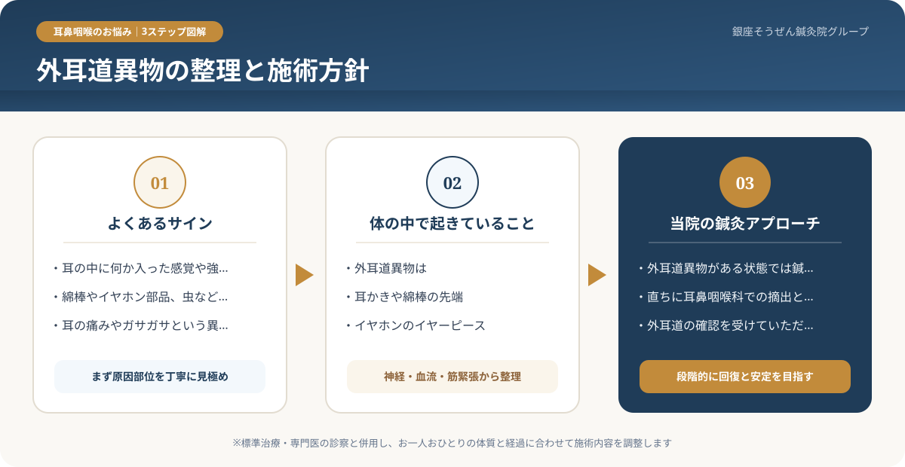

外耳道異物の鍼灸
耳の穴に異物が入った外耳道異物は耳鼻咽喉科での摘出が必須。摘出・治癒後に残る違和感や緊張の補完的ケアを行います。
まず知っておきたい要点と改善の流れ

外耳道異物は、耳かきや綿棒の先端、イヤホンのイヤーピース、小児のおもちゃや豆類、小さな虫などが外耳道内に入り込んだ状態です。ピンセットや耳かきで無理に取り出そうとすると異物を鼓膜の奥へ押し込んでしまい、外耳道損傷や鼓膜穿孔、外耳炎を引き起こす危険があります。鍼灸は異物除去の手段ではないため、まず耳鼻咽喉科を受診して専用器具で安全に摘出してもらうことが絶対の最優先です。
このようなお悩みはありませんか？
- ✓耳の中に何か入った感覚や強い詰まり感がある
- ✓綿棒やイヤホン部品、虫などが耳の奥に入ってしまった
- ✓耳の痛みやガサガサという異音、聞こえにくさがある
- ✓病院で異物を摘出したあとも耳周囲の違和感や緊張が残る
当院の施術アプローチ・改善の流れ
なぜ鍼灸で改善へ向かうのか？（作用機序の図解）
外耳道異物に対する鍼灸は、耳周囲・頸部の微小循環改善と聴覚・粘膜調整機序を通じて、お体本来の回復力を引き出します。

翳風・風池・合谷など、耳鼻咽喉領域の神経・血管と連動する経穴へ繊細にアプローチします。
首・顎まわりの深層筋緊張を緩め、内耳や粘膜周囲の滞った血流とリンパ循環を促します。
ストレスや睡眠不足で高ぶった交感神経を鎮め、音への過敏反応や粘膜の過剰反応を和らげます。
標準治療を妨げない設計で、生活支障度（THI等）の軽減と再発しにくい体調づくりを支えます。
院長YouTube解説・関連動画
外耳道異物の症状は、耳閉感や難聴
外耳道異物の症状は、耳閉感や難聴などです。小児の場合は、自覚症状があまりなく親が発見するケースが多いです。親が発見できない場合は、本人が症状を訴えることがないことから発見が遅れる場合もあります。
虫が入ってきた場合は、外耳道に入ってきたときの大きな音で自覚することがほとんどです。虫が移動すると、耳に痛みが現れることも多いです。
外耳道に異物が入った場合、以下のような主な症状が現れることがあります。
耳の痛みや不快感: 異物が耳道を刺激することにより、痛みや違和感が生じます。特に鋭利な物体や金属製の異物が入った場合、痛みが強く感じられることがあります。
聴力低下: 外耳道が異物で塞がれると、一時的な聴力の低下が起こることがあります。
耳のかゆみ: 異物が外耳道の皮膚を刺激することで、かゆみを感じることがあります。
排液または出血: 特に異物が鋭利な場合や、異物除去の試みで外耳道が傷ついた場合、排液や出血が見られることがあります。
圧迫感: 外耳道内に異物があると、耳の中に圧迫感や満腹感を感じることがあります。
めまい: 異物が耳の奥深くにある場合、めまいやバランスの問題を引き起こす可能性があります。
反射性咳嗽: 特に子供の場合、外耳道に異物があると咳を引き起こすことがあります。
これらの症状は、異物の種類、大きさ、形状、耳に入っている期間によって異なります。外耳道に異物が入った場合、自分で取り除こうとせずに、専門の病院に相談し、適切な処置を受けることが重要です。特に痛みや出血が伴う場合、または小さい子供が対象の場合は迅速な対応が求められます。
外耳道異物の改善方法は、異物を摘出することです。多くの場合、耳鼻咽喉科外来で異物を摘出することが可能です。
小児の場合は、異物の摘出を行なっているとき、じっとしておくことができないことも多く、動いてしまって摘出が難しい場合には全身麻酔が必要になることもあります。
外耳道異物では、異物を摘出した後に外耳道や鼓膜の損傷があるかどうかを確認します。損傷がある場合は、薬などを使って改善を行います。
外耳道に異物が入った場合の一般的な改善方法は、異物の種類、サイズ、形状、及び異物が耳にどれだけ深く入っているかによって異なります。以下に、標準的な手順を詳しく説明します。
1. 医師による評価
最初に、医師が耳鏡を用いて外耳道と鼓膜を詳しく調べ、異物の種類と位置を確認します。
2. 異物の除去
ピンセットや鉗子の使用: 小さな固体の異物はピンセットや特殊な鉗子を使用して慎重に取り除かれます。
吸引: 小さな異物や液体が関与している場合は、吸引器を使用して異物を取り除くことがあります。
洗浄: 水や生理食塩水で耳を洗浄し、異物を流し出します。特に非鋭利な異物の除去に有効です。
フックやループ: 異物が深く挿入されている場合や形状が複雑な場合は、フックやループを使って取り除くことがあります。
3. 追加処置
抗生物質: 外耳道が傷ついている場合や感染の兆候がある場合は、局所的な抗生物質の処方が行われることがあります。
痛み止め: 外耳道が刺激されている場合、痛み止め薬が処方されることがあります。
4. フォローアップ
鼓膜への損傷や感染のリスクを評価するため、数日後に再び調べることもあります。
自己処理の回避: 異物を自分で取り除こうとすると、耳を傷つけたり、異物をさらに奥に押し込んだりするリスクがあるため、専門の病院で改善を受けることが重要です。
特に注意が必要な場合: 虫などの生きた異物や、バッテリーなどの化学物質を含む異物が入っている場合は、特に迅速な介入が必要です。
外耳道異物の改善は通常、外来で行われ、ほとんどの場合は簡単に異物を除去できます。しかし、異物が深く挿入されているか、合併症が生じている場合は、より複雑な処置が必要になることがあります。
異物が外耳道に深く挿入されている場合や合併症が生じている場合、改善はより複雑になり、以下のような特別な処置が必要になることがあります。
1. 鎮静または全身麻酔
特に小児や非常に不安定な場合、鎮静剤や全身麻酔を使用して落ち着かせ、処置中の動きを制限します。これにより、安全かつ効果的に異物を除去できます。
2. 精密な外科的介入
異物が深く挿入されている場合や周囲の組織にダメージを与えている場合、外科医による精密な介入が必要になることがあります。これには、外耳道を拡張する手術や、必要に応じて微細な外科的器具を使用して異物を取り除く処置が含まれます。
3. 内視鏡または顕微鏡を使用した除去
内視鏡や手術用顕微鏡を使用して、正確な位置を特定し、異物を安全に取り除きます。これにより、損傷リスクを最小限に抑えることができます。
4. 追加的な処置
鼓膜の損傷、感染の発生、または外耳道の深刻な損傷がある場合、追加的な処置が必要になります。これには、抗生物質の処方、鼓膜修復手術、または炎症を抑えるための薬が含まれることがあります。
5. フォローアップ
処置後、症状の変化や合併症の徴候に注意しながら定期的なフォローアップを受ける必要があります。
これらの処置は、異物の種類や位置、年齢と健康状態、既存の合併症によって異なります。重要なのは、外耳道の異物が深く挿入されているか、合併症が疑われる場合は、専門の耳鼻咽喉科医による評価と改善を迅速に受けることです。自己処理を試みると、さらなる損傷や合併症を引き起こすリスクがあります。
成人の場合のほとんどは、異物が入った時にすぐに異物が入ったことを自覚することができます。
しかし、小児の場合は発見が遅れることも多くあります。小さいおもちゃを使って遊んでいる時には大人が確認しておくことが大事です。
突発性難聴・耳管不調・顎関節症のツボ図解
実際の施術ではお一人おひとりの体質・症状に合わせて選穴しますが、突発性難聴・耳管開放症/狭窄症・顎関節症・食いしばりのケアの臨床でよく用いられる代表的なツボの目安です。

📌 代表的なツボの詳細一覧表を開く（6穴） ▼
| ツボ名 | 位置の目安 | 主な狙い | セルフケアの注意点 |
|---|---|---|---|
| 耳門（じもん） | 耳の穴の前上、口を開けるとくぼむ上部 | 耳鳴り・耳閉感・側頭部の緊張緩和 | 突発性難聴は発症48時間以内の耳鼻科受診が最優先です。 |
| 聴宮（ちょうきゅう） | 耳の穴の真ん中の前、口を開けるとくぼむ所 | 内耳の微小循環・聴覚過敏や耳管不調のサポート | 口を軽く開けた状態で優しく触れます。 |
| 聴会（ちょうえ） | 耳たぶの付け根の前、口を開けるとくぼむ下部 | 耳周囲と顎関節の連動緊張を和らげるツボ | 強く押し込まず心地よい範囲で刺激します。 |
| 翳風（えいふう） | 耳たぶのすぐ後ろのくぼみ | 内耳循環と自律神経（迷走神経枝）の調整 | 耳周囲の冷え対策に蒸しタオルも有効です。 |
| 下関（げかん） | 耳の前、頬骨のアーチの下のくぼみ（顎関節部） | 顎関節症・食いしばり・咬筋のこわばり緩和 | 口を開閉して痛みが出る場合は無理に動かさず優しく押します。 |
| 中渚（ちゅうしょ） | 手の甲、薬指と小指の骨の間（拳のくぼみ） | 三焦経の要穴として耳の不調を遠隔から整えるツボ | 耳に触れにくい急性期でも安全に使える遠隔穴です。 |
国際査読論文の科学的エビデンス
国際的な医学データベース（PubMed・Cochrane等）で報告されている突発性難聴・耳管開放症/狭窄症・顎関節症・食いしばりのケア領域の代表的な査読済み鍼灸研究をまとめています（標準治療との併用や研究上の限界を含めて正確に掲載）。
📚 査読論文データ・PubMed出典リンクを開く（4件） ▼
| 年・研究デザイン | 対象・規模 | 主な結果 | 限界・出典 |
|---|---|---|---|
| 2013年 大規模多施設RCT | 季節性アレルギー性鼻炎 422名（ドイツ） | 7〜8週のRQLQ QOLがシャム比0.5点・薬単独比0.7点改善（P<0.001）、頓用薬使用も有意減少（P<0.001）。 | 1年目16週では群間差消失、臨床的意義は慎重評価。 Ann Intern Med (PMID: 23420231) |
| 2021年 メタ解析 | 耳鳴り 8 RCTs（n=504） | 生活支障度THI（MD -10.11, p<0.001）・TSI（MD -8.36, p<0.001）が有意改善。VASは有意差なし（p=0.06）。 | 組入れRCTの質・サンプル規模に限界あり。 Acupunct Med (PMID: 32772848) |
| 2026年 ネットワークメタ解析 | 突発性難聴 36研究（n=3,360・標準治療併用） | ステロイド等の標準治療への鍼灸併用で総有効率RR 1.19（p<0.0001）、3週間コースが推奨。 | エビデンス確実性は低く標準治療（早期ステロイド）併用が前提。 Complement Ther Med (PMID: 42918509) |
| 2023年 メタ解析 | 成人顎関節症 22 RCTs統合（n=471） | 標準治療併用で有効率RR 1.36・疼痛VAS MD -1.23と有意改善。 | GRADE確実性は低〜非常に低、さらなる高品質RCTが必要。 Medicine (PMID: 37746950) |
参考文献・出典
- 2013年 大規模多施設RCT（季節性アレルギー性鼻炎 422名（ドイツ））— Ann Intern Med (PMID: 23420231)
- 2021年 メタ解析（耳鳴り 8 RCTs（n=504））— Acupunct Med (PMID: 32772848)
- 2026年 ネットワークメタ解析（突発性難聴 36研究（n=3,360・標準治療併用））— Complement Ther Med (PMID: 42918509)
- 2023年 メタ解析（成人顎関節症 22 RCTs統合（n=471））— Medicine (PMID: 37746950)
よくある質問（FAQ）
Q. 耳に虫や綿棒の先端が入ったのですが、鍼灸院で相談できますか？▼
Q. 病院で摘出してもらった後、異常はないのに耳周りの張りや違和感が残っています。▼
あわせて読まれる関連疾患（耳鼻咽喉のお悩み）
ある日突然片耳などが聞こえにくくなる感音難聴です。発症早期の耳鼻科ステロイド治療を最優先に、早期併用や回復期の耳鳴り・めまいをケアします。
実際には音がないのに耳の中で雑音が聞こえる状態です。耳の血流や自律神経・脳の過敏さを整えるケアで軽減を目指します。
鼓膜の奥の中耳に炎症が起きる中耳炎。急性期は耳鼻咽喉科受診を最優先に、回復期や繰り返す不調の補完的ケアを行います。
末梢神経障害やむくみなど全身症状を呈するPOEMS症候群に対し、専門医治療を最優先に安定期の穏やかな補完ケアを行います。
リンパ管が袋状に膨らむ巨大リンパ管奇形に対し、専門医管理最優先・病変部刺鍼禁忌を守り安定期の全身ケアを支援します。
高度難聴から年月を経て回転性めまいを繰り返す遅発性内リンパ水腫に対し、専門医管理下で安定期のめまい誘因ケアを行います。
CLINICAL RECOVERY CASES
✨ 実際の臨床改善事例・回復経過を見る
銀座本院をはじめ各院での実際の改善事例を症状別に絞り込んでご確認いただけます。
おひとりで悩まず、まずはご相談ください
銀座本院・川口・大宮・横浜・博多・田無の各院でご予約を承っております。